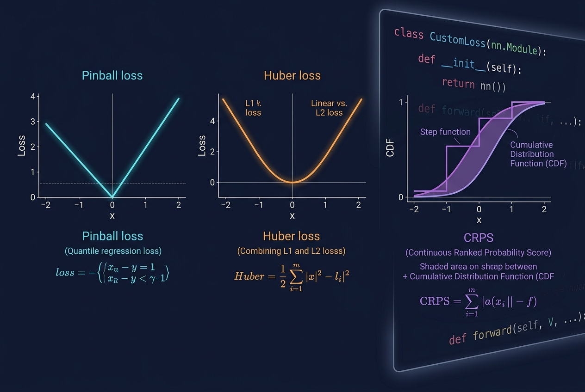
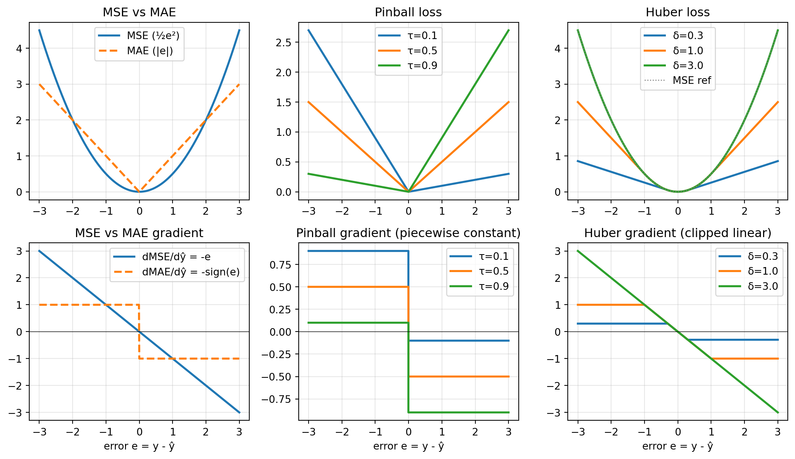
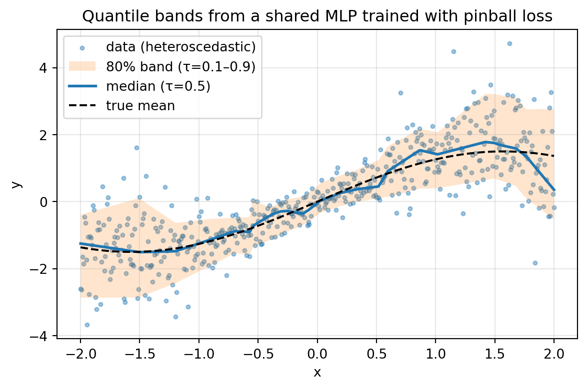
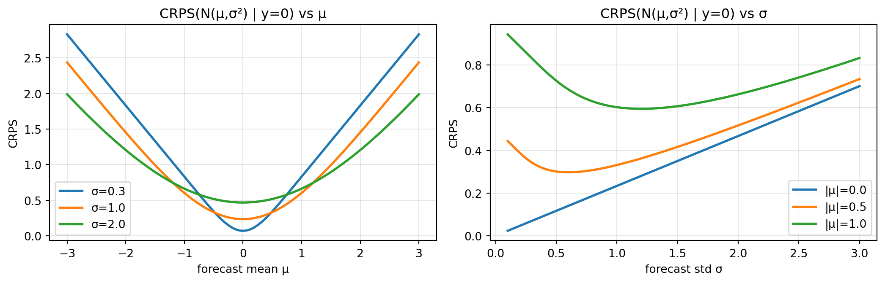

Writing Custom Losses in PyTorch: Pinball, Huber, and CRPS from Scratch
Data Science
Artificial Intelligence
PyTorch
Time Series
Probabilistic Forecasting
Quantile Regression
MSE is the default loss because it is convenient, not because it is correct. This post builds three losses that are correct for different problems — pinball for quantile forecasting, Huber for regression with outliers, and CRPS for probabilistic forecasting — as small PyTorch modules, examines their gradients, and demonstrates on synthetic problems where each one behaves differently from MSE.
Author
Prof. Shin
Published
July 17, 2026

[Concept Visualization] A diagram summarizing the key concepts of this post.
Why the default loss is a modelling choice, not a neutral one
The training objective in most PyTorch tutorials is nn.MSELoss(). It is convenient — smooth, convex, differentiable everywhere, minimised by the conditional mean — but each of these properties is also a commitment. The conditional mean is only the “right” thing to predict when the downstream decision is a squared-error decision; sensitivity to large errors is only appropriate when large errors are informative rather than corrupt; and a single point prediction is only sufficient when the user does not need to know how uncertain that prediction is.
Time series forecasting breaks all three assumptions at once. Retail demand planning cares about the 90th percentile, not the mean, because stockouts and overstock cost different amounts. Sensor data has outliers from clock drifts and hardware faults that are not what the model is supposed to learn to predict. And any downstream risk calculation — how much reserve capacity, how tight a control margin, how big a hedge — is a function of the whole predictive distribution, not a point estimate.
Three losses cover most of what is missing: the pinball (quantile) loss for asymmetric-cost point forecasts and for whole-distribution modelling via multiple quantiles; the Huber loss for robust regression when the noise has heavy tails; and the continuous ranked probability score (CRPS) for training and evaluating probabilistic forecasts. Each is short to implement, but the shape of each loss — and of its gradient — determines what the model actually learns.
Losses through their shape and gradient
The behaviour of a loss during training is not determined by its value but by its gradient. That distinction is why MSE and MAE differ so much in practice even though both are minimised at “the middle” of the target distribution. It is worth stating the four losses side by side in one place before implementing any of them.
The important thing about MSE is that its gradient grows without bound in \(|e|\): a single point with \(|e|=10\) contributes a gradient of magnitude \(10\), ten times the contribution of ten points with \(|e|=1\). That is what makes MSE both easy to optimise (informative gradients on hard points) and dangerous under outliers.
Pinball’s gradient is piecewise constant: for a given quantile level \(\tau\), every under-prediction contributes the same \(-\tau\) and every over-prediction contributes the same \(1-\tau\). Choosing \(\tau\) is choosing the ratio of those two constants, which is choosing how many points end up above vs. below the fitted line. At the optimum the proportion of positive residuals is \(\tau\) — pinball’s connection to quantile estimation is baked into its gradient, not an emergent property.
Huber’s gradient is \(e\) for small errors and clipped to \(\pm \delta\) for large ones. It is the natural interpolation between MSE and MAE: it keeps MSE’s smoothness near zero, where the model has already fit well and small gradients help fine-tune, and switches to MAE’s bounded gradient far from zero, where outliers would otherwise dominate.
We visualise all of this in one figure.
import torchimport matplotlib.pyplot as plte = torch.linspace(-3, 3, 601)def pinball_val(e, tau):return torch.maximum(tau * e, (tau -1.0) * e)def huber_val(e, delta): a = e.abs()return torch.where(a <= delta, 0.5* e * e, delta * (a -0.5* delta))fig, axes = plt.subplots(2, 3, figsize=(11, 6.4))# top row: loss valuesaxes[0, 0].plot(e, 0.5* e **2, lw=2, label="MSE (½e²)")axes[0, 0].plot(e, e.abs(), lw=2, ls="--", label="MAE (|e|)")axes[0, 0].set_title("MSE vs MAE"); axes[0, 0].legend(); axes[0, 0].grid(alpha=0.3)for tau in (0.1, 0.5, 0.9): axes[0, 1].plot(e, pinball_val(e, tau), lw=2, label=f"τ={tau}")axes[0, 1].set_title("Pinball loss"); axes[0, 1].legend(); axes[0, 1].grid(alpha=0.3)for d in (0.3, 1.0, 3.0): axes[0, 2].plot(e, huber_val(e, d), lw=2, label=f"δ={d}")axes[0, 2].plot(e, 0.5* e **2, lw=1, ls=":", color="grey", label="MSE ref")axes[0, 2].set_title("Huber loss"); axes[0, 2].legend(); axes[0, 2].grid(alpha=0.3)# bottom row: gradients w.r.t. the prediction, which equal -dL/deaxes[1, 0].plot(e, -e, lw=2, label="dMSE/dŷ = -e")axes[1, 0].plot(e, -torch.sign(e), lw=2, ls="--", label="dMAE/dŷ = -sign(e)")axes[1, 0].axhline(0, color="k", lw=0.5); axes[1, 0].legend(); axes[1, 0].grid(alpha=0.3)axes[1, 0].set_title("MSE vs MAE gradient")for tau in (0.1, 0.5, 0.9): g = torch.where(e >=0, torch.tensor(-tau), torch.tensor(1.0- tau)) axes[1, 1].plot(e, g, lw=2, drawstyle="steps-mid", label=f"τ={tau}")axes[1, 1].axhline(0, color="k", lw=0.5); axes[1, 1].legend(); axes[1, 1].grid(alpha=0.3)axes[1, 1].set_title("Pinball gradient (piecewise constant)")for d in (0.3, 1.0, 3.0): g = torch.where(e.abs() <= d, -e, -d * torch.sign(e)) axes[1, 2].plot(e, g, lw=2, label=f"δ={d}")axes[1, 2].axhline(0, color="k", lw=0.5); axes[1, 2].legend(); axes[1, 2].grid(alpha=0.3)axes[1, 2].set_title("Huber gradient (clipped linear)")for ax in axes[-1]: ax.set_xlabel("error e = y - ŷ")fig.tight_layout()plt.show()

Figure 1: Loss values (top row) and their gradients w.r.t. the prediction (bottom row) for MSE, MAE, pinball at three quantiles, and Huber at three deltas.
Two features to read off the figure. First, pinball at \(\tau = 0.5\) coincides with \(|e|/2\), so median regression is a special case of quantile regression; and the three pinball gradients are horizontal lines at \(-\tau\) (right of zero) and \(1-\tau\) (left of zero), a compact way to see why the fitted level ends up with fraction \(\tau\) of residuals above zero. Second, Huber’s transition at \(|e| = \delta\) is smooth in value but sharp in gradient: a small \(\delta\) makes the loss behave almost like MAE, a very large \(\delta\) recovers MSE, and typical choices sit at one or two noise standard deviations.
The pinball loss and quantile forecasting
Consider a variable \(Y\) conditional on features \(X\), and suppose we want a forecast \(\hat{q}_\tau(X)\) of the \(\tau\)-th conditional quantile of \(Y \mid X\). Koenker and Bassett (1978) showed that the population minimiser of the pinball risk is exactly that quantile:
\[\hat{q}_\tau(x) = \arg\min_{f} \; \mathbb{E}\bigl[ L_\tau(Y - f(X)) \mid X = x \bigr].\]
The consequence is very direct in code: replacing MSE with pinball at \(\tau = 0.9\) trains a network whose output is a 90th percentile. It is the same architecture, the same optimiser, only the loss changes.
import torchimport torch.nn as nnclass PinballLoss(nn.Module):""" Pinball (quantile) loss. - If `tau` is a scalar, output is a single-quantile loss and expects predictions of shape (..., ). - If `tau` is a 1D tensor of K quantiles, predictions must have the last dimension of size K and targets are broadcast over it. """def__init__(self, tau, reduction: str="mean"):super().__init__() tau = torch.as_tensor(tau, dtype=torch.float32)self.register_buffer("tau", tau)self.reduction = reductiondef forward(self, pred: torch.Tensor, target: torch.Tensor) -> torch.Tensor:# broadcast target to pred's shape for multi-quantile headsifself.tau.ndim ==1and pred.shape[-1] ==self.tau.numel(): target = target.unsqueeze(-1) e = target - pred loss = torch.maximum(self.tau * e, (self.tau -1.0) * e)ifself.reduction =="mean": return loss.mean()ifself.reduction =="sum": return loss.sum()return loss
Two implementation details are worth flagging. The subgradient at \(e =
0\) is not unique; torch.maximum picks one of the two branches at random-ish depending on how it resolves the tie, and for pinball this does not matter because the measure of the tie set is zero. The buffer registration for tau means it moves with .to(device) even though it is not a learnable parameter — a small but useful hygiene point.
To see the quantile property directly, we fit a shared MLP with three output heads for \(\tau \in \{0.1, 0.5, 0.9\}\) on heteroscedastic data where the noise variance grows with \(|x|\).
import torchimport torch.nn as nnimport matplotlib.pyplot as plttorch.manual_seed(0)# Data: y = 1.5 sin(x) + N(0, sigma(x)^2), sigma(x) = 0.3 + 0.4|x|n =500x = torch.linspace(-2, 2, n).unsqueeze(1)sigma =0.3+0.4* x.abs()y =1.5* torch.sin(x) + sigma * torch.randn_like(x)y = y.squeeze(1)taus = torch.tensor([0.1, 0.5, 0.9])K = taus.numel()class QuantileMLP(nn.Module):def__init__(self, K=3, hidden=32):super().__init__()self.trunk = nn.Sequential( nn.Linear(1, hidden), nn.ReLU(), nn.Linear(hidden, hidden), nn.ReLU(), )self.head = nn.Linear(hidden, K)def forward(self, x):returnself.head(self.trunk(x))model = QuantileMLP(K=K)opt = torch.optim.Adam(model.parameters(), lr=0.01)crit = PinballLoss(tau=taus)for step inrange(3000): opt.zero_grad() pred = model(x) # (n, K) loss = crit(pred, y) loss.backward() opt.step()with torch.no_grad(): pred = model(x).numpy()# empirical coverage of the 80% band on the training setcovered = ((y.numpy() >= pred[:, 0]) & (y.numpy() <= pred[:, 2])).mean()print(f"Final pinball loss: {loss.item():.4f}")print(f"Empirical coverage of 80% band on training data: {covered:.3f}")xs = x.numpy().ravel()true_mean = (1.5* torch.sin(x)).numpy().ravel()fig, ax = plt.subplots(figsize=(7, 4.2))ax.scatter(xs, y.numpy(), s=8, alpha=0.4, label="data (heteroscedastic)")ax.fill_between(xs, pred[:, 0], pred[:, 2], alpha=0.2, label="80% band (τ=0.1–0.9)")ax.plot(xs, pred[:, 1], lw=2, label="median (τ=0.5)")ax.plot(xs, true_mean, "k--", lw=1.5, label="true mean")ax.legend(); ax.grid(alpha=0.3)ax.set_xlabel("x"); ax.set_ylabel("y")ax.set_title("Quantile bands from a shared MLP trained with pinball loss")plt.show()
Final pinball loss: 0.1725
Empirical coverage of 80% band on training data: 0.812

Figure 2: Fitted 10/50/90 quantile bands from a single MLP trained with a joint pinball loss. Shaded region is the 10–90 interval; dashed line is the true mean.
Two things to read from the figure. The band widens where the noise grows: because the fitted 10th and 90th percentiles chase their respective conditional quantiles, the loss picks up on the heteroscedastic structure without an explicit variance model. And the empirical coverage printed above is close to \(\tau_{0.9} - \tau_{0.1}
= 0.8\); that is what one should expect on the training set when the loss is properly optimised, and any large deviation is diagnostic — under-coverage often means the heads have crossed or the model is too inflexible to reach the target quantiles.
Head crossing is the main pathology of independent-quantile fits: with three separate heads there is nothing in the training objective that forces \(\hat{q}_{0.1} \le \hat{q}_{0.5} \le \hat{q}_{0.9}\). Post-hoc sorting is a common fix; more principled fixes include monotone neural networks and simultaneous quantile regression with a non-crossing penalty. In our small example the shared trunk and smooth data keep the fitted heads ordered, but this is not something to rely on.
The Huber loss for robust regression
Huber (1964) proposed the piecewise loss that now bears his name as a way to write down an estimator that is efficient at the Gaussian model but bounded-influence: a single very large residual can only pull the fit by an amount proportional to \(\delta\), not proportional to the residual itself.
import torchimport torch.nn as nnclass HuberLoss(nn.Module):def__init__(self, delta: float=1.0, reduction: str="mean"):super().__init__()assert delta >0.0self.delta =float(delta)self.reduction = reductiondef forward(self, pred: torch.Tensor, target: torch.Tensor) -> torch.Tensor: e = target - pred a = e.abs() quad =0.5* e * e lin =self.delta * (a -0.5*self.delta) loss = torch.where(a <=self.delta, quad, lin)ifself.reduction =="mean": return loss.mean()ifself.reduction =="sum": return loss.sum()return loss
PyTorch already ships nn.SmoothL1Loss (which is Huber up to a factor of \(\delta\)) and nn.HuberLoss. Writing one’s own is worth doing once, both because the API for the built-in loss varies across versions and because the effect of \(\delta\) becomes very concrete once you see the definition. Choosing \(\delta\) is essentially choosing the noise scale you consider “normal”: residuals within \(\delta\) of zero are treated as Gaussian, residuals outside as outliers to be down-weighted. The rule of thumb \(\delta = 1.345 \hat\sigma\) is asymptotically 95% efficient at the Gaussian model and is a reasonable starting point when the noise scale is roughly known.
To make the difference visible, we fit \(y = ax + b\) to a linear process with 5% Gaussian outliers, once with MSE and once with Huber.
Figure 3: Ordinary least squares (red) is pulled by 5% Gaussian outliers; Huber loss with δ=0.2 (green) stays close to the ground truth (dashed).
Both fits are unbiased in expectation, so with enough data both recover the truth. What the figure shows is finite-sample robustness: under a fixed sample size and 5% contamination, Huber’s slope and intercept sit closer to the ground truth because the influence of each outlier is bounded by \(\delta\). The size of the difference depends on the contamination fraction and the outlier scale; on this problem the gap is modest but consistent across seeds. Where Huber pays a price is at the pure Gaussian model: with no outliers it is slightly less statistically efficient than OLS, which is the trade-off Huber (1964) set up in the first place.
Huber is not the only robust option. Cauchy and Tukey biweight losses push further and redescend — points beyond a certain distance get zero gradient — at the cost of a non-convex loss surface. Huber’s value is its convexity: an ordinary optimiser reaches the global minimum without any of the local-minimum problems the redescending losses have.
CRPS: a proper score for the whole distribution
MSE evaluates the mean, MAE evaluates the median, pinball at \(\tau\) evaluates a single quantile. If we want a single number that measures how well an entire predictive distribution fits the truth, and that number is strictly proper — meaning it is minimised in expectation only by reporting the true distribution — we need the continuous ranked probability score (CRPS; Matheson & Winkler, 1976; Gneiting & Raftery, 2007).
For a scalar observation \(y\) and a forecast distribution with CDF \(F\),
The integrand compares the forecast CDF at every point \(z\) to the “perfect” step-function CDF that a delta at \(y\) would produce. Two useful equivalent forms exist. When \(F\) is Gaussian \(\mathcal{N}(\mu,
\sigma^2)\), the integral has a closed form (Gneiting et al., 2005):
where \(\Phi\) and \(\phi\) are the standard normal CDF and PDF. When the forecast is a sample\(x_1, \dots, x_M\) (an ensemble or MC-Dropout draw), CRPS has an unbiased finite-sample estimator (Gneiting & Raftery, 2007):
The first term rewards accuracy (forecast samples close to \(y\)) and the second penalises sharpness (forecast samples too tightly clustered). CRPS is the sum of a location term and a spread term, and its minimiser sits at the truth for both.
import torchimport torch.nn as nnimport mathclass CRPSGaussianLoss(nn.Module):""" CRPS for a Gaussian forecast N(mu, sigma^2). Pred shape: (..., 2), last dim = (mu, log_sigma). """def__init__(self, reduction: str="mean"):super().__init__()self.reduction = reduction@staticmethoddef _phi(z):return torch.exp(-0.5* z * z) / math.sqrt(2.0* math.pi)@staticmethoddef _Phi(z):return0.5* (1.0+ torch.erf(z / math.sqrt(2.0)))def forward(self, pred: torch.Tensor, target: torch.Tensor) -> torch.Tensor: mu = pred[..., 0] sigma = torch.nn.functional.softplus(pred[..., 1]) +1e-6 z = (target - mu) / sigma crps = sigma * (z * (2.0*self._Phi(z) -1.0)+2.0*self._phi(z)-1.0/ math.sqrt(math.pi))ifself.reduction =="mean": return crps.mean()ifself.reduction =="sum": return crps.sum()return crpsclass CRPSEnsembleLoss(nn.Module):""" Unbiased finite-sample CRPS for an ensemble of M members per obs. Pred shape: (..., M). Uses M(M-1) rather than M^2 in the pairwise term for unbiasedness. """def__init__(self, reduction: str="mean"):super().__init__()self.reduction = reductiondef forward(self, members: torch.Tensor, target: torch.Tensor) -> torch.Tensor:# broadcast target to (..., 1) so we can subtract along M M = members.shape[-1] y = target.unsqueeze(-1) term_a = (members - y).abs().mean(dim=-1)# pairwise |x_i - x_j| divided by 2 M (M-1) -> unbiased diff = (members.unsqueeze(-1) - members.unsqueeze(-2)).abs() term_b = diff.sum(dim=(-1, -2)) / (2.0* M * (M -1)) crps = term_a - term_bifself.reduction =="mean": return crps.mean()ifself.reduction =="sum": return crps.sum()return crps
The Gaussian form uses the observation-relative standardised score \(z =
(y - \mu) / \sigma\); the ensemble form uses only pairwise absolute differences and is differentiable through \(x_i\), which means one can train a model that emits an ensemble (for example, an MC-Dropout net sampling \(M\) predictions) end-to-end with CRPS.
To see what CRPS is actually rewarding, we vary \(\mu\) and \(\sigma\) around a fixed \(y\) and plot the score surface, and then check the minimum-at-true-\(\sigma\) property numerically.
import torch, mathimport matplotlib.pyplot as pltdef crps_gauss(y, mu, sigma): z = (y - mu) / sigma Phi =0.5* (1.0+ torch.erf(z / math.sqrt(2.0))) phi = torch.exp(-0.5* z * z) / math.sqrt(2.0* math.pi)return sigma * (z * (2.0* Phi -1.0) +2.0* phi -1.0/ math.sqrt(math.pi))mus = torch.linspace(-3, 3, 400)sigs_axis = torch.linspace(0.1, 3.0, 400)fig, axes = plt.subplots(1, 2, figsize=(11, 3.6))for s in (0.3, 1.0, 2.0): axes[0].plot(mus, crps_gauss(torch.tensor(0.0), mus, torch.tensor(s)), lw=2, label=f"σ={s}")axes[0].set_title("CRPS(N(μ,σ²) | y=0) vs μ")axes[0].set_xlabel("forecast mean μ"); axes[0].set_ylabel("CRPS")axes[0].legend(); axes[0].grid(alpha=0.3)for mu in (0.0, 0.5, 1.0): axes[1].plot(sigs_axis, crps_gauss(torch.tensor(0.0), torch.tensor(mu), sigs_axis), lw=2, label=f"|μ|={mu}")axes[1].set_title("CRPS(N(μ,σ²) | y=0) vs σ")axes[1].set_xlabel("forecast std σ"); axes[1].set_ylabel("CRPS")axes[1].legend(); axes[1].grid(alpha=0.3)fig.tight_layout()plt.show()torch.manual_seed(0)y_samples = torch.randn(4000) # true dist N(0,1)sigs = torch.linspace(0.05, 4.0, 200)avg_crps = torch.stack([crps_gauss(y_samples, torch.tensor(0.0), s).mean() for s in sigs])print(f"argmin σ (should be near 1.0): {sigs[avg_crps.argmin()].item():.3f}")fig, ax = plt.subplots(figsize=(6.4, 3.6))ax.plot(sigs, avg_crps, lw=2)ax.axvline(1.0, color="k", ls="--", lw=1, label="true σ=1")ax.set_xlabel("forecast σ (with correct mean μ=0)")ax.set_ylabel("average CRPS")ax.set_title("CRPS is minimised at the true σ when forecast mean is correct")ax.grid(alpha=0.3); ax.legend()plt.show()
argmin σ (should be near 1.0): 0.983

(a) CRPS for a Gaussian forecast N(μ, σ²) with y = 0. Left: score vs mean, at three fixed σ. Right: score vs σ, at three fixed |μ|. Bottom: with correct mean, the average CRPS over 4000 samples from N(0,1) has a clear minimum at σ = 1.
(b)
Figure 4
The first two panels are worth reading together. Increasing \(\sigma\) lowers the penalty at \(y\) but raises it everywhere else — a wider forecast hedges against being wrong about \(\mu\). That is what propriety means in practice: a forecast cannot game the score by inflating uncertainty, because at the true \(\mu\) the score is minimised only at the true \(\sigma\). The bottom panel confirms this numerically: over 4000 draws from \(\mathcal{N}(0, 1)\), the argmin of the average CRPS over \(\sigma\) is at \(\sigma \approx 1\).
CRPS reduces to MAE for a deterministic forecast (a point mass): a Dirac at \(\hat{y}\) gives \(\operatorname{CRPS} = |y - \hat{y}|\). That is a useful sanity check and it also means that if you use CRPS to evaluate a point forecast, you are effectively using MAE. It is worth choosing a probabilistic model before invoking CRPS.
When each loss is the right one
Pinball is the right loss when the downstream cost is asymmetric — when under- and over-prediction are punished differently. Retail inventory, energy dispatch, and any risk quantile are natural targets. Multiple quantile heads with a shared trunk give a fast and often surprisingly good approximation to the whole distribution, at the cost of no distributional shape (only the quantile levels one chose to train). Non-crossing is not automatic, and pinball is not differentiable at zero; both are manageable, neither is a reason to avoid it.
Huber is the right loss when the errors are heavy-tailed but the target you care about is still a mean-like quantity. The choice of \(\delta\) is a hyperparameter that trades statistical efficiency at the Gaussian model against robustness to outliers, and it should be tuned or set from an estimate of the noise scale rather than left at 1.0. Huber will not save a model that is fundamentally mis-specified — if the true conditional distribution is asymmetric, Huber’s mean-like target is still wrong on average, just less sensitive to the tails.
CRPS is the right loss when the deliverable is a distribution, not a point. Direct minimisation of CRPS trains a network that emits the parameters of a distribution (\(\mu, \sigma\) for Gaussian) or an ensemble of samples. The Gaussian form is the easiest starting point; the ensemble form does not commit to a distributional shape but requires a way to produce \(M\) samples per prediction (Bayesian approximation, MC-Dropout, latent noise concatenation to the inputs). Both are proper scores; both reduce to interpretable special cases; both let calibration and sharpness be jointly optimised in a single objective.
The default of MSE remains defensible only when three conditions hold: the mean is what the user actually wants, the noise is roughly symmetric and not too heavy-tailed, and no uncertainty is needed downstream. The moment any of those conditions fails, one of the losses above is closer to the objective the model is actually being graded on in production.
Limits and things not covered
Each of the three losses has practical constraints worth naming. Pinball’s non-uniqueness on ties is invisible in typical continuous data, but on integer or heavily quantised targets it can cause optimisation to plateau. Huber’s \(\delta\) can drift out of a reasonable range if the noise scale changes over time; adaptive schemes (updating \(\delta\) from a running estimate of median absolute deviation) exist but complicate reproducibility and monitoring. CRPS in the Gaussian form assumes a Gaussian shape that heavy-tailed targets (financial returns, extreme weather) violate, and switching to an ensemble or a Student-\(t\) head is not free — training an ensemble output raises memory and, unless the pairwise sum is implemented efficiently, compute in \(O(M^{2})\) per observation.
We have not touched multivariate CRPS (Energy Score, Variogram Score), losses tailored for temporally structured errors (CRPS averaged over horizons vs. Multivariate CRPS across horizons), or composite losses that combine, for example, pinball for the median with an interval score for the extremes. These are natural next steps once the modelling target is fixed.
References
Gneiting, T., Raftery, A. E., Westveld, A. H., & Goldman, T. (2005). Calibrated probabilistic forecasting using ensemble model output statistics and minimum CRPS estimation. Monthly Weather Review, 133(5), 1098–1118. https://doi.org/10.1175/MWR2904.1
Gneiting, T., & Raftery, A. E. (2007). Strictly proper scoring rules, prediction, and estimation. Journal of the American Statistical Association, 102(477), 359–378. https://doi.org/10.1198/016214506000001437
Huber, P. J. (1964). Robust estimation of a location parameter. The Annals of Mathematical Statistics, 35(1), 73–101. https://doi.org/10.1214/aoms/1177703732
Matheson, J. E., & Winkler, R. L. (1976). Scoring rules for continuous probability distributions. Management Science, 22(10), 1087–1096. https://doi.org/10.1287/mnsc.22.10.1087